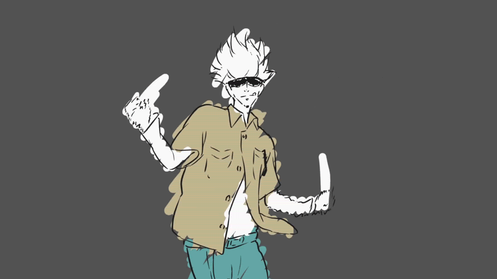

Greetings! I am Magzhan "Shelldon" Tursynkul, a passionate Windows Kernel/Driver/User Mode Exploit developer hailing from the vibrant city of Almaty, Kazakhstan. I am deeply immersed in the world of cybersecurity, specializing in the intricate art of reverse engineering.
Currently, I am honing my skills as a cyber security student, constantly pushing the boundaries of what's possible in the realm of digital security. My love affair with programming languages like C/C++ and Python is boundless, and I find immense joy in delving into the nuances of Binary Exploitation and reverse engineering.
With a fervent dedication to uncovering vulnerabilities and crafting innovative solutions, I thrive in the dynamic landscape of cybersecurity. I am excited to share my expertise and insights with you, so together, we can fortify the digital world.
Welcome to my corner of the web, where the pursuit of knowledge and the thrill of discovery converge.
Feel free to tweak or add any personal details to make it more tailored to your style and preferences. If you need further adjustments, just let me know!